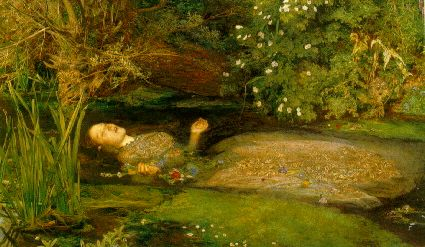

I told Althea I was feeling lost
Lacking in some direction
Althea told me upon scrutiny
my back might need protection
I told Althea that treachery
was tearin me limb from limb
Althea told me: now cool down boy -
settle back easy Jim
You may be Saturday's child all grown
moving with a pinch of grace
You may be a clown in the burying ground
or just another pretty face
You may be the fate of Ophelia
sleeping and perchance to dream -
honest to the point of recklessness
self centered to the extreme
Ain't nobody messin with you but you
your friends are getting most concerned -
loose with the truth
maybe it's your fire
but baby...don't get burned
When the smoke has cleared, she said,
that's what she said to me:
You're gonna want a bed to lay your head
and a little sympathy
There are things you can replace
and others you cannot
The time has come to weigh those things
this space is getting hot -
you know this space is getting hot
I told Althea
I'm a roving sign -
that I was born to be a bachelor -
Althea told me: Ok that's fine -
So now I'm out trying to catch her
Can't talk to me without talking to you
We're guilty of the same old thing
Talking a lot about less and less
And forgetting the love we bring
First performance on August 4, 1979, at the Oakland Auditorium Arena. Appeared in the first set following "El Paso" and preceding the first "Lost Sailor."
The WELL's Deadlit conference topic number 102 is about "Althea."
"Althea Name by which Richard Lovelace (1618-1658) poetically addressed a woman, supposed to have been Lucy Sacheverell, whom he also celebrated by the name of Lucasta."--New Century Cyclopedia of Names.
Here is Lovelace's poem, "To Althea from Prison" (1649):
When Love with unconfined wings
Hovers within my Gates;
And my divine Althea brings
To whisper at the Grates:
When I lye tangled in her haire,
And fetter'd to her eye;
The Birds, that wanton in the Aire,
Know no such Liberty.When flowing Cups run swiftly round
With no allaying Thames,
Our carelesse heads with Roses bound,
Our hearts with Loyall Flames;
When thirsty griefe in Wine we steepe,
When Healths and draughts go free,
Fishes that tipple in the Deepe,
Know no such Libertie.When (like committed Linnets) I
With shriller throat shall sing
The sweetness, Mercy, Majesty,
And glories of my KING;
When I shall voyce aloud, how Good
He is, how Great should be;
Inlarged Winds that curle the Flood,
Know no such Liberty.Stone Walls doe not a Prison make,
Nor Iron bars a Cage;
Mindes innocent and quiet take
That for an Hermitage;
If I have freedome in my Love,
And in my soule am free;
Angels alone that soar above,
Injoy such Liberty.
This is the second name in a Hunter song which has been used as an pseudonymous form of address by a poet addressing a real-life woman; the other is "Stella," used by Jonathan Swift as his poetic name for Esther Johnson, as well as by Philip Sidney, in his sonnet series Astrophel and Stella, in addressing Lady Penelope Devereux.
The meaning and derivation of the word "althea", according to The Oxford English Dictionary:
"Bot. [L. althaea, a marsh mallow, f. [the Greek] to heal.] A genus of the plants of which the Marsh Mallow and Hollyhock are species; by florists often extended to the genus Hibiscus.
And this note from a reader, which sheds new light on the "it's your fire" line:
Date: Tue, 27 Jun 95 13:45:39 -0700
From: Daniel Yairi
Subject: Althea lyricsI have really enjoyed browsing through your annotated GD lyrics, you obviously have put a lot of effort into this project. In regard to your notes on Althea, you may also want to make reference to the character from Greek mythology. Althea was the mother of Meleager. When her son was a young child, the Fates told Althea that when a specific log in her fire was completly burned, her son would die. Althea quickly removed the log and put it away for safe keeping. Years later Meleager held a hunt to kill a boar which was terrorizing the village. Many people helped in the hunt, including the girl-friend (?) of Meleager whose name was Atalanta. Atalanta was the first person to strike the boar and Meleager later awarded her the prize for being most instrumental in the hunt. Althea's brothers, who also participated in the hunt, were upset that a woman would get the prize. A fight broke out and Meleager killed the two men. When Althea heard what her son had did, she quickly took out the log she had kept all the years and tossed it into a fire. In a nearby field, Meleager felt a sudden pain and died.
Thanks, Daniel!
Monday's child is fair of face,
Tuesday's child is full of grace,
Wednesday's child is full of woe,
Thursday's child has far to go,
Friday's child is loving and giving,
Saturday's child works hard for its living,
And a child that's born on the Sabbath day
Is fair and wise and good and gay.
See the thematic essay, "Grateful Goose?", on the influence of nursery rhymes on the Dead's lyrics.
And this comment from a reader:
Date: Fri, 12 May 1995 19:14:26 -0500 (EST)
From: Jane Glass
Subject: Clown in the burying groundI always thought that "the clown in the burying ground" refered to Yorick in Hamlet. (as in "Alas, poor Yorick, I knew him Horatio....)
Hamlet finds Yorick's skull in an open grave (which turns out to be for Ophelia) and laments over the death of his friend, the former court jester (i.e. clown). His speech ends with the "there are more things in heaven and earth that are dreamt of in your philosophy." Fits well with the "Althea" themes (forgetting the love we bring, etc.).
Just a suggestion. I look forward to reading more of your project.
Jane Glass

The painting "Ophelia" (1851) by the Pre-Raphaelite painter Sir John Everett Millais.